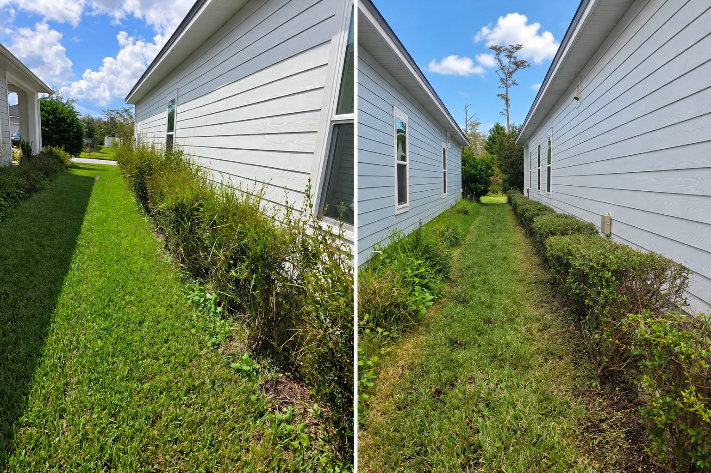

Platform in development. Business planning tools and early-access signup are available now.
The business management hubIllustrative interface demo · Sample data · Connected services in development
THE MOW MATTER ADVANTAGE
Build a business worth more.
Know what you’re building. Find room to grow. Make every route—and every customer relationship—work harder for your business.
01
See your business value.
Your customer list is more than a list. Explore an estimated business-value snapshot, then see how recurring revenue, retention and a more organized operation can strengthen the asset you’re building.
Look for nearby homeowner demand, build recurring care plans and model your next crew in the Growth Lab. Focus your marketing where another yard could fit your day.
Start with a $0 subscription for up to 10 customers. Set service rates, labor costs and packages together so you can preview a quote before committing to the job.
Bring job locations, crew capacity and weather guidance into planning. Review tighter routes and weather risks without losing sight of visits customers are already expecting.
Optional AI photo analysis helps surface visible conditions and possible care needs. You review the suggestion, set the price and offer an add-on. The homeowner chooses what to approve.
Connect the office and mobile crew website with job details, start and completion updates, and photo records. Give homeowners a clearer picture of the work behind their care plan.
Clear costs. Owner control. Platform fees are 3.5% on Starter, 2.5% on Growth and 1.5% on Scale, plus Stripe processing. Optional add-ons and usage charges are separate; check plan details before activating.
Business-value snapshots are planning estimates, not appraisals or promises of a sale price or financing. Photo insights require activation and allowance, owner review and live validation. Weather and route recommendations support your decisions; they do not automatically change confirmed appointments.
From scattered work to a stronger operation.
Scattered texts and paper lists
Connected customer and recurring visit records
Guessing what a job should cost
Your approved rates, labor setup and quote preview
More driving as customers grow
Location-aware planning and nearby growth opportunities
Good work with no record
Completion photos and an optional, reviewed follow-up offer
A comparison with manual workflows, rather than claims about another software provider.
MOW MATTER INTELLIGENCE
Every yard tells a story. Put it to work.
Connect local weather, the actual job location and before-and-after photos to a clearer care plan. Optional AI insights help your team review likely grass, plant, tree and shrub types—and spot the next service worth offering.
Plan around local weather and seasonal growth.
Use job check-ins and photos to understand the visit.
Turn reviewed care needs into customer-approved upgrades.
Show the value with photos, clear pricing and helpful guidance.
Feed approved care back into routes, schedules and management.
Real yard photos. Optional AI observations reviewed by the owner before a customer approves extra work.
REAL WORK. FIRST-CUSTOMER TESTING.
See the work. See what could come next.
These real before-and-after photos come from an early customer test. They show the yard work—not a promise of results produced by AI.
Capture. Keep a record of the yard before and after service.
Review. Optional AI insights can flag visible conditions for the operator to check.
Offer. Build an optional service using your approved rates.
Approve. Let the homeowner choose before additional work is agreed.
Photo analysis is an optional feature awaiting live validation. Suggestions are not plant diagnoses or automatic charges.
Before serviceAfter service
BEFORE · TALLER HEDGE GROWTH
AFTER · ILLUSTRATIVE AI INSIGHTS
Original first-customer test photos · Photos taken from different positions. These originals document the work. Overlay flags illustrate possible AI review areas, not a completed live analysis.View the AI-cleaned presentation

AI-enhanced for presentation. Refer to the original photographs above for the actual service record.